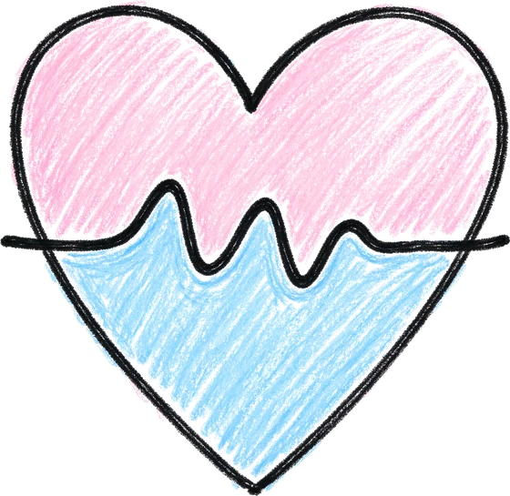
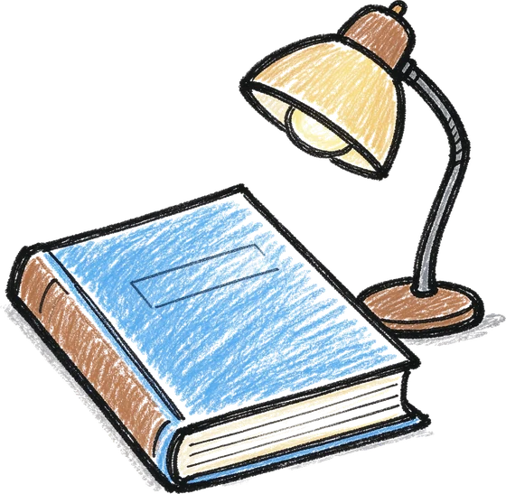
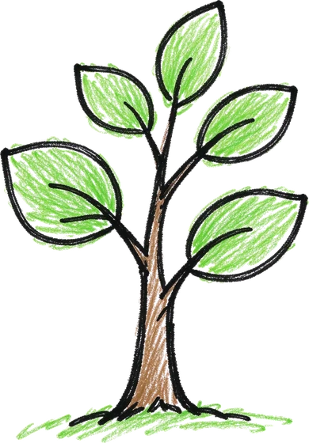
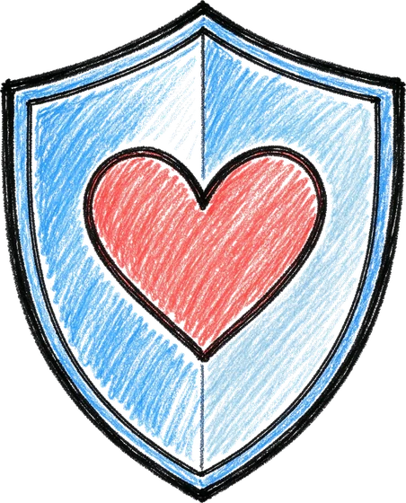
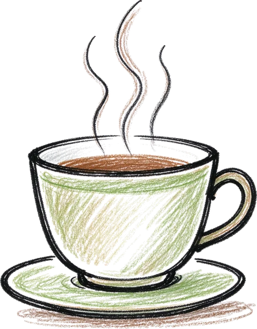

成长技巧、教练故事与常见困惑
所有内容都按「问题、资源、行动」写，不学术、不说教。
先挑一类看
共 7 篇 · 每周更新
-

考前焦虑：为什么越想睡越睡不着 越告诉自己「快点睡」，脑子越清醒。先处理那件没做完的事，身体才肯放你走。 2026-09-30 -

拖延不是懒：把任务切到能开始的大小 你不是不想做，是那件事在你心里太大。切到「两分钟能开始」为止。 2026-09-27 - 被父母否定时，怎么把话说出口 先不争对错。把「我想让你知道」放在前面，话才有地方落下。 2026-09-22
-

情绪上来时，先做这一件小事 不是深呼吸。是先把身体放到一个安全的地方，再让情绪自己退潮。 2026-09-18 -

怎么分辨「低落」和需要立刻求助 持续多久、影响多大、有没有伤害自己的念头——三条线帮你说清楚。 2026-09-12 -

一位教练的手记：陪一个人走过低谷 八次会面里她说得最多的一句是「我不知道」。后来我们把那团雾画了出来。 2026-09-06 - 写下来为什么有用：把感觉变成一条线 情绪在脑子里是一团，写下来才变成一段有头有尾的事。 2026-08-29
文章标题与日期为示例数据，接入后来自平台真实内容库。